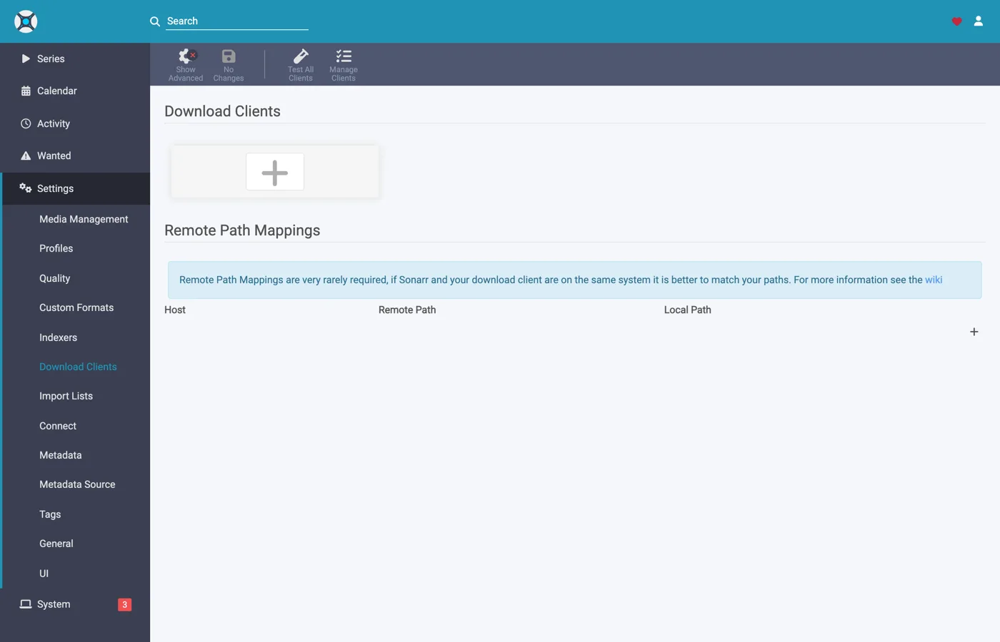

Sonarr et Radarr avec des torrents, étape par étape
Il existe trois façons d'utiliser Sonarr et Radarr avec zurg. Le vrai choix porte sur qui fait les recherches : zurg ou les *arrs. Lequel choisir compare les deux.
Les deux premières peuvent tourner côte à côte. Elles partagent le même dossier __magic__.
Le guide précédent orientait les *arrs vers zurg pour Usenet, zurg répondant comme un SABnzbd. Voici l'autre moitié : zurg répond comme un qBittorrent, les *arrs lui transmettent un magnet ou un .torrent au lieu d'un NZB, et la release part sur un compte debrid au lieu d'un serveur de news. L'import repose sur la même astuce : un renommage dans __magic__, rien à télécharger pour importer, rien de copié.
Lequel des deux le *arr envoie n'est pas anodin. Un .torrent est en général envoyé au compte tel quel, sous forme de fichier ; seul un magnet est ajouté à partir de son info hash seul. En mode cached-only, le mode par défaut, TorBox et Debrid-Link reçoivent l'info hash à la place, car c'est ainsi qu'ils refusent une release non mise en cache sans l'ajouter. Un magnet oblige le compte à deviner le contenu du torrent à partir du hash, et le hash d'un tracker privé n'a pas de swarm public pour le faire. Real-Debrid échoue alors avec magnet_error sans aucun fichier, et TorBox accepte le magnet puis reste bloqué sur checking sans liste de fichiers, sans taille et avec une estimation de cent jours : la grab ne échoue pas et ne se termine pas non plus. Le fichier .torrent fait directement la recherche de cache du compte par hash, donc le contenu déjà présent sur le compte est ajouté immédiatement, sans aucune résolution de magnet. C'est ce qui rend les indexeurs privés utilisables ici : leurs releases sont ajoutables exactement quand le compte possède déjà le contenu, ce qui, pour tout ce que la communauté partage, est le cas le plus courant. Pointe le *arr vers un indexeur qui fournit des fichiers .torrent plutôt que des magnets. Les indexeurs privés le font.
Tout ce qui suit a été capturé avec zurg 2026.08.30.0459-nightly-73-g5b4c9790, Sonarr 4.0.19.2979, Radarr 6.3.0.10514 et Prowlarr 2.5.2.5491, sur une installation réelle avec un vrai compte AllDebrid. Les noms d'hôte et d'utilisateur ont été remplacés par you@zurg-server. Les indexeurs s'appellent my-indexer. Les clés d'API et les nombres de bibliothèque sont fictifs. Rien d'autre dans la sortie capturée n'a été modifié.
Avant de commencer
zurg a un compte qui peut ajouter des torrents : Real-Debrid, AllDebrid, TorBox, Premiumize, Debrid-Link ou Offcloud. Les six acceptent le fichier .torrent lui-même, ce qui permet d'ajouter la release d'un tracker privé. Un compte Usenet n'accepte un torrent sous aucune de ces formes : une installation dont le seul fournisseur est nzb accepte chaque grab, puis le refuse. zurg le signale au démarrage.
2. magic.enabled vaut true. Sans cela, le chemin de sauvegarde n'existe pas et chaque import échoue. Voir __magic__.
3. Le montage est visible par le *arr au chemin que zurg indique. Si le *arr tourne dans un conteneur, lis
- Linux : un *arr qui tourne sous un autre utilisateur que zurg voit un dossier vide tant que
user_allow_othern'est pas activé. Voir Configuration Linux. - macOS : lance-le avec le même utilisateur que zurg. Le montage est
/Volumes/Zurg, sauf si tu as modifiémount_path. - Windows : lance Sonarr et Radarr en application de la zone de notification, comme le propose leur installeur, et non en service Windows. Le lecteur
Z:de zurg appartient à la session dans laquelle tu es connecté, et un service s'exécute en dehors de cette session, donc il ne voit pas le lecteur. Voir les règles de session.
Vérifie les deux premiers directement dans le fichier de configuration, dans le répertoire de travail de zurg. Sous Windows, ouvre config.yml dans Notepad à la place.
$ grep -A3 '^providers:' config.yml
providers:
- type: alldebrid
token: <redacted>
$ grep -A3 '^magic:' config.yml
magic:
enabled: true
allow_delete: falseL'ordre de la liste providers: compte ici. Une demande de grab est proposée à chaque compte qui accepte les torrents, dans cet ordre. Un compte qui refuse ou bloque dessus est abandonné, et le suivant est essayé. Si tu as deux comptes, mets en premier celui que tu préfères dépenser en premier.
Deux clés sortent un compte de cet ordre. watchlist: true place un compte en premier, peu importe sa position dans le fichier. add_torrents: false le retire complètement de la rotation : il continue de servir et de lire sa bibliothèque, mais plus rien de nouveau ne lui est ajouté. C'est le cas d'un compte d'archive, ou d'un compte dont le quota est déjà réservé. Un compte Usenet ne se voit jamais proposer de torrent, dans aucun des deux cas. Les deux clés sont décrites dans la référence de configuration.
1. Activer l'endpoint
Deux méthodes, même résultat. Les deux écrivent dans config.yml et nécessitent toutes les deux un redémarrage : les routes qui servent __magic__ et le point de terminaison qBittorrent ne sont enregistrées qu'une fois, au démarrage de zurg.
Option A — le tableau de bord
Ouvre le tableau de bord de zurg, clique sur Config, puis fais défiler jusqu'à __magic__ & Download Clients. Active Serve __magic__ et qBittorrent Endpoint.

Config, c'est là que se trouve le réglage ; Magic, c'est là que tu verras arriver les grabs plus tard.

Laisse qBittorrent Save Path vide, sauf si ton *arr monte zurg à un autre endroit que celui où zurg se trouve lui-même — voir
Option B — config.yml
Ajoute le bloc à la main et redémarre zurg.
magic:
enabled: true
qbittorrent:
enabled: true
api_key: "" # empty = zurg generates one and keeps it
categories: [tv-sonarr, radarr]
save_path: "" # empty = <mount_path>/__magic__/__all__
cached_only: true # the default: only take what an account already holdsLes catégories ne sont pas des dossiers. Elles pointent toutes vers le même endroit : le dossier propre à la release sous __magic__/__all__. La liste ne sert qu'à créer les catégories à l'avance : un Test depuis un client crée celles qui manquent, et zurg les garde dans data/qbittorrent-categories.json. Prowlarr, si tu l'utilises, veut prowlarr — voir
Redémarre zurg, puis vérifie que l'endpoint est bien enregistré et que le provider a été pris en compte :

Une seule ligne alldebrid suffit pour l'endpoint — n'importe lequel des six types compatibles torrent.
Le journal de démarrage dit la même chose, et ça vaut le coup de le lire une fois :
INFO router.qbittorrent qBittorrent API on /api/v2 and /qbittorrent/api/v2, save path /mnt/zurg_qbt/__magic__/__all__, categories tv-sonarr, radarr
INFO router.qbittorrent qBittorrent: cached-only, so a grab is only accepted onto an account that already holds the content; anything else is refused and the *arr takes its next release. Set qbittorrent.cached_only: false to let accounts download
INFO router.qbittorrent qBittorrent: torrents are offered to alldebrid, in that order2. Trouver la clé API
La clé API est toute l'authentification de ce point d'accès. Réglez-la donc une bonne fois et ne la collez nulle part en public.
Si vous avez laissé api_key vide, zurg en a généré une au premier démarrage et l'a écrite dans data/qbittorrent-apikey :
$ cat data/qbittorrent-apikey
fedcba9876543210fedcba9876543210
Clé d'exemple : la vôtre sera différente. Le fichier survit aux redémarrages, donc la clé reste stable une fois générée.
Si vous avez défini api_key vous-même, elle se trouve dans config.yml et aucun fichier n'est écrit.
Ce point d'accès est en dehors de l'authentification de base de zurg. Les *arrs s'authentifient auprès d'un client de téléchargement à leur façon, et leur couche HTTP transforme un 401 de l'authentification de base en « unable to connect », sans aucune information exploitable. C'est pourquoi zurg exempte volontairement /api/v2. La clé API est à elle seule le verrou. Traitez ce port comme le reste de zurg : sur un réseau de confiance, ou derrière quelque chose qui l'est.
Trois façons de présenter la clé, toutes acceptées :
Authorization: Bearer <key>— ce que le client envoie lorsque son champ API Key est rempli. C'est la méthode recommandée : elle évite complètement la connexion.- La clé comme mot de passe sur
auth/login, avec n'importe quel nom d'utilisateur. Utilisez cette méthode si vous préférez remplir les champs Username et Password. - Le nom d'utilisateur et le mot de passe du tableau de bord de zurg, si
username:etpassword:sont définis dansconfig.yml.
3. Vérifier qu'elle répond
Commence par ça, avant de toucher à Sonarr. Dix secondes suffisent, et ça te permet de savoir tout de suite si le problème vient de zurg ou du *arr.
$ KEY=fedcba9876543210fedcba9876543210
$ ZURG=192.168.88.244:9995
$ curl -s "http://$ZURG/api/v2/app/webapiVersion"
Forbidden
$ curl -s -H "Authorization: Bearer $KEY" "http://$ZURG/api/v2/app/webapiVersion"
2.11.2
$ curl -s -H "Authorization: Bearer $KEY" "http://$ZURG/api/v2/app/version"
v5.0.4
$ curl -s -H "Authorization: Bearer $KEY" "http://$ZURG/api/v2/app/preferences" | jq .save_path
"/mnt/zurg_qbt/__magic__/__all__"Dans PowerShell. Tape curl.exe, et non curl : la commande curl de Windows PowerShell est une autre commande.
PS> $KEY = "fedcba9876543210fedcba9876543210"
PS> $ZURG = "192.168.88.244:9995"
PS> curl.exe -s "http://$ZURG/api/v2/app/webapiVersion"
Forbidden
PS> curl.exe -s -H "Authorization: Bearer $KEY" "http://$ZURG/api/v2/app/webapiVersion"
2.11.2
PS> curl.exe -s -H "Authorization: Bearer $KEY" "http://$ZURG/api/v2/app/version"
v5.0.4
PS> (Invoke-RestMethod "http://$ZURG/api/v2/app/preferences" -Headers @{ Authorization = "Bearer $KEY" }).save_path
Z:/__magic__/__all__Le simple Forbidden est la bonne réponse. Le premier test des clients est un GET /api/v2/app/webapiVersion non authentifié. Un vrai qBittorrent répond 403 quand l'API est là mais que personne n'est connecté. zurg répond donc la même chose, et le client comprend « v2 prise en charge, authentifie-toi maintenant ». Un 404 simple signifie au contraire que qbittorrent.enabled est toujours à false, ou que zurg n'a pas été redémarré depuis que tu as fait le changement.
Vérifie ensuite qu'une mauvaise clé est bien refusée :
$ curl -s -o /dev/null -w "%{http_code}\n" -H "Authorization: Bearer wrongkey" \
"http://$ZURG/api/v2/torrents/info"
403PS> curl.exe -s -o NUL -w "%{http_code}\n" -H "Authorization: Bearer wrongkey" "http://$ZURG/api/v2/torrents/info"
403save_path est le chemin que zurg donnera aux clients. Vérifie maintenant que c'est un chemin qu'eux peuvent ouvrir.
Les deux formes d'URL fonctionnent, donc tu peux utiliser l'une ou l'autre dans le champ URL Base du client :
4. Créer les dossiers racines
Créez-les avant de les ajouter, car la boîte de dialogue Add Root Folder de l'*arr parcourt le système de fichiers en direct et ne proposera pas un dossier qui n'existe pas.
$ mkdir -p /mnt/zurg_qbt/__magic__/tv /mnt/zurg_qbt/__magic__/movies
$ ls -d /mnt/zurg_qbt/__magic__/tv /mnt/zurg_qbt/__magic__/movies
/mnt/zurg_qbt/__magic__/movies
/mnt/zurg_qbt/__magic__/tvPS> New-Item -ItemType Directory -Force Z:\__magic__\tv, Z:\__magic__\moviesOu créez les deux dossiers dans Explorer.
Remplacez /mnt/zurg_qbt par votre propre mount_path. Si rien n'est défini, il vaut /mnt/zurg sous Linux, /Volumes/Zurg sous macOS et Z: sous Windows.
Le dossier racine doit se trouver à côté du chemin de sauvegarde, ni dedans ni au-dessus. C'est la même règle que dans le guide Usenet, pour la même raison : zurg indique __magic__/__all__ comme chemin de sauvegarde. Les deux clients lèvent une vérification de santé si un dossier racine est le dossier de sortie du client de téléchargement. Radarr en lève aussi une si un dossier racine contient ce dossier. Les dossiers frères ne déclenchent aucune des deux. Ce guide montre des captures d'écran de l'erreur.
Il y a une deuxième raison, propre aux torrents : un déplacement vers une destination située hors de __magic__ est un déplacement entre deux systèmes de fichiers, donc une copie. Or une copie depuis un montage debrid relit toute la version sur le réseau. Garder Remove Completed activé (
Un déplacement entre deux volumes est aussi une copie. Cela compte avec Docker. L'étape 8 l'explique.
5. Ajouter le client dans Sonarr
Une nouvelle installation de Sonarr bloque tout derrière un écran de premier démarrage. Choisis Forms (Login Page), définis un nom d'utilisateur et un mot de passe, puis clique sur Save.

Il ne te laissera pas passer tant que Authentication Method n'est pas réglé sur autre chose que None.

Après Save, tu es déconnecté une fois et tu arrives sur la page de connexion.

Settings → Download Clients
Allez dans Settings → Download Clients. Sur une installation fraîche, il n'y a rien d'autre que la carte +.

Cliquez sur le + sous « Download Clients », pas celui plus bas sous « Remote Path Mappings ».
Choisissez qBittorrent dans la colonne Torrents.

zurg imite qBittorrent en particulier, donc rien d'autre dans cette liste ne fonctionnera. Les deux colonnes indiquent quel guide vous suivez : SABnzbd est sous Usenet, qBittorrent sous Torrents.
La fenêtre s'ouvre avec les valeurs par défaut de qBittorrent : localhost, port 8080, pas de clé.

Ce qu'il faut mettre dans chaque champ

La clé API affichée est fictive — collez la vôtre.
Dans Docker, « localhost » et le nom d'hôte sont tous les deux trompeurs. Dans un conteneur, localhost désigne le conteneur lui-même, et le nom d'hôte de la machine se résout généralement en 127.0.1.1 — qui est aussi le conteneur. L'hôte de cette installation s'appelle zurg-server ; zurg-server dans le conteneur Sonarr se résolvait en 127.0.1.1, alors que le même nom fonctionnait depuis le shell de l'hôte. Utilisez l'IP du LAN ou de Tailscale de l'hôte, jamais localhost ni le nom d'hôte seul.
Cliquez sur Test. Une coche verte signifie que les vérifications du client ont réussi — version de l'API, authentification, catégorie et liste des torrents.

Cliquez maintenant sur Save.

6. Ajouter le dossier racine dans Sonarr
Allez dans Settings → Media Management et faites défiler jusqu'en bas.

Cliquez sur Add Root Folder. Un explorateur de fichiers s'ouvre sur le système de fichiers de Sonarr, qui, avec Docker, est celui du conteneur.

Tapez le chemin ou naviguez jusqu'à lui. Si le montage est bien visible pour Sonarr, __magic__ s'ouvre et affiche ce que vous avez créé à l'étape 4, à côté du __all__ que zurg crée lui-même. C'est la preuve la plus rapide que le bind mount est correct.

Si ce dossier est vide ou affiche une erreur, arrêtez-vous et corrigez le montage avant de continuer.

Terminez le chemin par __magic__/tv (Z:\__magic__\tv sous Windows) puis cliquez sur Ok.

Free Space affichant 1 PiB, c'est zurg qui indique un système de fichiers virtuel, et non un disque. C'est normal : cela satisfait la vérification d'espace libre des *arr avant un téléchargement.
7. Faire de même dans Radarr
Identique, avec deux valeurs changées : la catégorie est radarr et le dossier racine est __magic__/movies.

Le premier lancement de Radarr fonctionne de la même façon : active Forms auth, puis connecte-toi.

Settings → Download Clients → +, puis qBittorrent sous Torrents.

Même hôte, même port, même clé. Seule Category change : radarr, et non tv-sonarr.
Test, coche verte, Save.

Ensuite, va dans Settings → Media Management → Root Folders → Add Root Folder et ajoute /mnt/zurg_qbt/__magic__/movies.
Un seul zurg, deux clients, une seule file. La liste des torrents que voit chaque client est filtrée uniquement par catégorie. Deux Sonarr qui utilisent tous les deux tv-sonarr verront les téléchargements de l'autre ; Sonarr sur tv-sonarr et Radarr sur radarr ne se verront pas. Avec un seul client par catégorie, ce problème n'arrive jamais.
8. Si votre *arr tourne dans Docker
Cette étape concerne Docker sur un hôte Linux. Sur macOS et Windows, installez plutôt les *arrs comme des applications classiques, comme le décrit
Ce sont les mêmes trois problèmes que dans le guide Usenet, avec les mêmes solutions : le montage reste le montage. Voici donc la version courte. L'étape 8 de ce guide donne le détail.
Le chemin que zurg signale doit être un chemin que le client peut ouvrir. Si le conteneur monte la bibliothèque à un autre endroit que zurg, chaque import échoue avec download doesn't contain intermediate path ou avec une vérification de santé du chemin distant. Définissez qbittorrent.save_path sur le chemin que le client voit, ou ajoutez un mappage de chemin distant :
qbittorrent:
save_path: "/data/zurg/__magic__/__all__" # what the *arr sees, not what zurg seesUn seul volume pour le chemin de sauvegarde et les dossiers racines. Ne donnez pas au conteneur __magic__/__all__ et __magic__/tv comme deux volumes. Le renommage entre les deux échoue à l'intérieur du conteneur. Le client copie alors chaque import depuis votre compte et l'écrit sur le disque de zurg, sans le signaler. Donnez-lui un seul volume qui contient tout le montage de zurg, et accédez aux deux dossiers par ce volume. Le bind ci-dessous est ce volume.
Montez le parent du montage, pas le point de montage. Redémarrer zurg démonte puis remonte le montage. Un conteneur qui a monté le point de montage lui-même garde la connexion fuse morte, et toutes les lectures suivantes répondent Socket not connected. Comme les deux clients vérifient l'espace libre avant d'envoyer une requête, chaque release est silencieusement rejetée. Montez le parent avec rslave : le remontage arrive alors comme un événement de sous-montage, que le conteneur suit. Les conteneurs de ce rig ont été lancés avant que zurg ne monte quoi que ce soit, et le montage est tout de même apparu à l'intérieur :
$ docker exec sonarr df -h /mnt/zurg_qbt
Filesystem Size Used Avail Use% Mounted on
zurg{8amax}: 1.0P 0 1.0P 0% /mnt/zurg_qbt9. Suivre un envoi du début à la fin
Ajoute un seul élément, récupère-le à la main, et suis-le jusqu'au bout. Tout ce qui suit est une vraie récupération via la configuration ci-dessus : Ghost in the Shell (1995), récupéré à la main depuis un indexeur.
Lancer le téléchargement
Ouvre le film, clique sur Interactive Search et choisis une release.

La colonne Source affiche torrent : c'est le protocole que ce point d'accès accepte. Clique sur le bouton avec la flèche circulaire à la fin de la ligne pour la lancer. Si Radarr te demande de confirmer le mappage d'abord :

Override and Grab apparaît quand la release ne correspond pas parfaitement. Vérifie le mappage et clique sur Grab Release. Un lancement normal n'affiche jamais cette boîte de dialogue.
Le compte le prend en charge
Trois lignes du journal de zurg composent l'ajout complet : le compte qui le prend, la tâche déposée, et finished. La capture ci-dessous vient d'une version plus ancienne qui n'enregistrait que les deux dernières :
INFO router.qbittorrent qBittorrent: [Polarwindz] Ghost in the Shell (1995) (BD 1080p HEVC FLAC) (0c5e4077…) added to alldebrid as 720824192
INFO router.qbittorrent qBittorrent: [Polarwindz] Ghost in the Shell (1995) (BD 1080p HEVC FLAC) (0c5e4077…) finished on alldebridLe hash est l'info hash envoyé par le client. added … as 720824192 est l'identifiant propre au compte pour cette tâche. Cette release était déjà en cache sur le compte, donc finished arrive environ une seconde plus tard. Pour une release non mise en cache, il y a un délai entre les deux lignes, le temps que le compte la télécharge. Ce que fait le compte pendant ce délai apparaît dans la file du client :
Un swarm bloqué affiche Downloading avec le débit et le nombre de seeds à zéro, plutôt qu'un avertissement de blocage. stalledDL est un état que les *arrs utilisent pour gérer les téléchargements échoués, et un swarm sans seeds ne dit rien de la validité de la release.
Le magnet complet arrive jusqu'au compte. zurg transmet le nom d'affichage sous lequel le client l'a récupéré, ainsi que les trackers qu'il a indiqués. Sur un indexeur qui ne publie que des magnets, le nom d'affichage est le seul endroit où le nom de la release existe. Sans lui, TorBox liste une demande non résolue sous son hash de quarante caractères tant que les métadonnées restent non résolues. Un .torrent porte déjà son propre nom et ses trackers, donc rien n'y est ajouté. L'exception est le mode cached-only (le mode par défaut) sur TorBox et Debrid-Link, qui sont interrogés par hash seul, car un résultat en cache revient sous son vrai nom.
L'import se fait
Activity → Queue, puis Activity → History. Deux événements, à quelques secondes d'écart : Grabbed, puis Movie Imported :

Développe la ligne importée et regarde les chemins. Source est /mnt/zurg_qbt/__magic__/__all__/[Polarwindz] …/[Polarwindz] ….mkv et Imported To est /mnt/zurg_qbt/__magic__/movies/Ghost in the Shell (1995)/…. Le fichier n'a jamais quitté __magic__, et c'est pour ça que l'import est un simple renommage. La capture d'écran a été prise avant que la bibliothèque ne soit déplacée dans __all__, donc son chemin source est d'un niveau plus haut que celui que tu verras.
Une release récupérée que le client décide de ne pas importer reste dans la file d'attente, avec un avertissement. Celle de la ligne de file d'attente de cette capture est une mise à niveau que le profil de qualité a refusée. Elle est visible, à un clic de Remove, et elle ne libère rien par elle-même :


Status : Downloaded, Size 17.2 GiB, et rien n'a été téléchargé pour que ce soit vrai. Les octets sont lus depuis ton compte au moment où quelque chose lit le fichier.
Vérifier que le fichier est réel
L'import a déplacé le fichier dans le dossier racine. Lis les deux extrémités d'un fichier et demande à ffprobe ce que c'est :
Si ton shell ne trouve pas ffprobe, utilise ~/zurg/bin/ffprobe : le setup y place sa propre copie quand aucune n'était installée.
$ F="/mnt/zurg_qbt/__magic__/tv/One Piece/Season 23/[AnoZu] One Piece S23E21 1080p CR WEB-DL AAC 2.0 H.264.mkv"
$ ls -la "$F"
-rw-rw-r-- 1 you users 1446325722 Aug 31 00:44 …mkv
$ dd if="$F" bs=1M count=1 >/dev/null
1048576 bytes (1.0 MB, 1.0 MiB) copied, 0.00592934 s, 177 MB/s
$ ffprobe -v error -show_entries format=duration,size,format_name \
-of default=noprint_wrappers=1 "$F"
format_name=matroska,webm
duration=1415.808000
size=1446325722Dans PowerShell, depuis le dossier de zurg. Le setup a placé bin\ffprobe.exe là, sauf si un ffprobe était déjà dans ton PATH ; dans ce cas, tape ffprobe à la place :
PS> $F = Get-Item -LiteralPath "Z:\__magic__\tv\One Piece\Season 23\[AnoZu] One Piece S23E21 1080p CR WEB-DL AAC 2.0 H.264.mkv"
PS> $F.Length
1446325722
PS> bin\ffprobe.exe -v error -show_entries format=duration,size,format_name -of default=noprint_wrappers=1 $F.FullName
format_name=matroska,webm
duration=1415.808000
size=1446325722Celui-là est un grab de Sonarr : un épisode récupéré de la même façon, importé dans tv/One Piece/Season 23/. Un Matroska de 23 minutes, lu directement depuis le compte debrid. Les octets arrivent quand quelque chose les lit, et non quand le *arr importe.
Depuis Sonarr, le rendu est identique


Les deux mêmes événements d'historique, le même import par renommage, et une file d'attente qui se vide dès que l'import est terminé. Une release en cache passe de grab à importée en quelques secondes, c'est pour ça qu'il n'y a pas de capture d'écran pendant le téléchargement ici.
10. Prowlarr, téléchargements manuels
Prowlarr utilise le même point d'accès et partage le code client qBittorrent avec les deux autres, mais ce n'est pas un importateur. Il n'a pas de bibliothèque et n'importe jamais rien. Ce qu'il peut faire, c'est envoyer une release sur le compte manuellement, et c'est précisément à cela que sert son client de téléchargement.
Le premier lancement de Prowlarr affiche le même écran d'authentification Forms que les deux autres.


Settings → Download Clients → +, puis qBittorrent. Dans le sélecteur de Prowlarr, tous les clients figurent dans une seule liste alphabétique, et non dans les deux colonnes utilisées par les *arrs. Même hôte, même port et même clé API. Deux champs diffèrent des *arrs :


Test, coche verte, Save.


Ensuite, cliquez sur Search, tapez ce que vous voulez, et envoyez une ligne vers le client :

La release arrive sur le compte exactement comme un grab d'*arr : même chemin d'ajout, mêmes catégories, même dossier __magic__. Celle-ci est arrivée en cache, finished en moins d'une seconde. Mais rien ne l'importe. Elle reste sur le compte et se lit depuis le mount, et c'est bien le but : l'envoi de Prowlarr sert à mettre ceci sur mon compte debrid maintenant, pas à faire tourner le pipeline automatisé grab-import-clean. Pour cela, gardez Sonarr et Radarr pointés vers le point d'accès et laissez Prowlarr gérer les indexeurs.
11. Ajouter une release à la main
Le tableau de bord de zurg n'a pas de bouton d'ajout. Tu peux quand même donner toi-même une release à zurg et l'envoyer vers le bon Sonarr ou Radarr. Ajoute-la via ce point de terminaison avec la catégorie de cette app. Chaque app ne regarde que sa propre catégorie. Quatre apps avec quatre catégories ne voient chacune que leurs propres ajouts.
KEY=your-qbittorrent-api-key
curl -H "Authorization: Bearer $KEY" http://localhost:9999/api/v2/torrents/add \
-F 'urls=magnet:?xt=urn:btih:<hash>&dn=Movie.Title.2012.1080p.WEB-DL' \
-F category=radarr4kEn PowerShell, avec curl.exe et non curl :
$KEY = "your-qbittorrent-api-key"
curl.exe -H "Authorization: Bearer $KEY" http://localhost:9999/api/v2/torrents/add `
-F 'urls=magnet:?xt=urn:btih:<hash>&dn=Movie.Title.2012.1080p.WEB-DL' `
-F category=radarr4kUn fichier .torrent fonctionne aussi. Envoie-le comme -F 'torrents=@Movie.Title.2012.1080p.WEB.torrent' à la place de urls.
Quatre choses déterminent si l'app l'importe.
- Le film ou la série doit déjà être dans cette app. Elle n'importe que ce qu'elle peut associer à quelque chose qu'elle gère.
- Le nom doit dire de quoi il s'agit. Le nom d'un magnet est son
dn. Le nom d'un fichier.torrentest son nom de fichier. zurg ignore le champrenamede qBittorrent. Radarr n'a pas pu analyserSintelet l'a gardé en attente avec Unable to parse download.Sintel.2010.1080p.WEB-DLa été importé. Donne au nom une année. - Corrige le nom avant que l'app ne le voie pour la première fois. Une fois que Radarr a jugé un téléchargement non analysable, il garde ce verdict jusqu'au redémarrage de Radarr. Le rajouter avec un meilleur nom n'a rien changé. Après un redémarrage, il a été importé.
- La catégorie n'est qu'une étiquette. Une catégorie absente de
qbittorrent.categoriesest acceptée. Elle n'apparaît simplement pas dans la liste des catégories. Tu peux plus tard transférer une release vers une autre app. L'app qui possède la nouvelle catégorie l'importe à sa prochaine vérification.
curl -H "Authorization: Bearer $KEY" http://localhost:9999/api/v2/torrents/setCategory \
-F hashes=<hash> -F category=radarrSous Windows, c'est curl.exe sur une seule ligne, avec $KEY défini comme ci-dessus.
Une release déjà présente sur ton compte fonctionne de la même façon. Cela inclut une release que tu as envoyée depuis DMM. zurg voit qu'elle est déjà dans la bibliothèque et l'enregistre sous la catégorie sans l'ajouter une deuxième fois. Une release que tu n'ajoutes jamais via ce point de terminaison reste invisible pour Sonarr et Radarr. zurg ne leur montre que ce qui est passé par lui.
Mesuré le 2026-10-04 sur un compte AllDebrid avec Radarr 6.3. Chaque film a été importé par renommage dans __magic__/movies, rien n'a été copié. Un Radarr réglé sur une autre catégorie ne l'a jamais vu. Sonarr n'a pas été testé.
12. Plex lit un seul jeu de dossiers
Un import ne retire pas une release des dossiers propres à zurg. Un film que Radarr place dans __magic__/movies se trouve toujours dans movies et dans __all__. Plex doit donc lire un seul ensemble de dossiers, jamais les deux.
Si tes bibliothèques Plex pointent déjà vers movies et shows, laisse-les comme elles sont. Les téléchargements des *arr apparaissent là sans rien changer. Ajoute les dossiers __magic__ à Plex seulement si tu veux une bibliothèque composée uniquement des imports des *arr, et retire alors les autres dossiers. Avec les deux ensembles, Plex trouve chaque titre en double.
N'ajoute jamais non plus la racine de __magic__. Elle contient __magic__/__all__, qui correspond de nouveau à toute la bibliothèque.
13. Indexeurs, et DMM pour les sponsors
Sonarr et Radarr font leurs recherches via Prowlarr. N'importe quel indexeur torrent public fonctionne ici, car zurg ajoute le magnet à ton compte debrid. Certains sites publics sont derrière Cloudflare, et Prowlarr refuse de les ajouter sans FlareSolverr. Passe-les.
Si tu sponsorises zurg, DMM devient aussi un indexeur. Il cherche dans toute la bibliothèque de DMM et place en tête ce que ton compte debrid possède déjà. Ces téléchargements sont instantanés.
- Récupère ta DMM API key sur gatekeeper : clique sur Connect GitHub, et si tu sponsorises sur Patreon, lie ensuite Patreon. Copie la DMM API key affichée. Ce n'est pas la clé zurg de l'
étape 2 , et c'est la même clé que pour l'indexeur Usenet de DMM, à configurer sur debridmediamanager.com/newznab. - Dans Prowlarr, ouvre Indexers → Add Indexer et choisis Generic Torznab.
- Entre l'URL de ton compte et la clé. Laisse API Path à
/api.
TorBox et Premiumize ont besoin que ta clé du service soit d'abord liée dans DMM. La page DMM indique où. Ajoute /cached à la fin de l'URL pour exclure ce que ton compte ne possède pas encore.
Prowlarr teste l'indexeur quand tu l'enregistres. Une clé refusée signifie que le sponsoring a expiré ou que la clé est fausse, et l'erreur indique laquelle. Ensuite, Prowlarr transmet DMM à Sonarr et Radarr tout seul. Une clé permet 20 recherches par minute, toutes applications confondues.
14. Votre watchlist Plex
Sonarr et Radarr peuvent suivre ta liste de suivi Plex. Tout ce que tu ajoutes sur Plex est ajouté, recherché et arrive via zurg comme n'importe quel autre téléchargement.
Dans chaque application, ouvre Settings → Import Lists → + → Plex Watchlist et appuie sur Authenticate with Plex.tv. Règle le root folder sur ton dossier __magic__ et active la recherche à l'ajout (search on add). Radarr récupère les films de la liste et Sonarr les séries.
zurg a sa propre liste de suivi qui télécharge depuis les indexeurs que tu lui donnes directement. Utilise l'une ou l'autre. Avec les deux, le même titre est téléchargé deux fois.
Pour suivre d'autres listes, comme une liste par genre, voir Lists in Sonarr & Radarr.
Si l'import copie au lieu de déplacer
Tout ce qui précède repose sur le fait que l'import soit un renommage. Deux éléments le déterminent. Le premier est la façon dont le conteneur accède au montage, et seul toi peux le changer. Un chemin de sauvegarde et des dossiers racines sur deux volumes copient chaque import, quel que soit le reste de la configuration.
Le client ne déplacera un fichier importé que s'il pense pouvoir supprimer le téléchargement ensuite. Cela suppose trois conditions à la fois : Remove Completed activé, un torrent terminé et en pause, et une limite de partage qu'il peut voir comme atteinte. zurg signale les deux dernières exactement comme il faut : chaque torrent terminé revient en pause, avec un ratio de 0 pour une limite de ratio de 0. Remove Completed est le seul réglage qui te revient.
Avec ce réglage désactivé, le client copie à la place. Sur un montage debrid, une copie signifie lire chaque octet de la release via le réseau, puis l'écrire sur le disque local. La release de l'étape 9 passerait d'un renommage qui ne déplaçait rien à un téléchargement de 17 GiB, pour importer un fichier qui était déjà là.
zurg réactive le réglage quand il dispose de la clé d'API de l'*arr, via une source Radarr ou Sonarr (une source avec enabled: false suffit) ou via la bannière du tableau de bord qui la demande. Il vérifie au démarrage, toutes les dix minutes et lorsque l'*arr appelle zurg pour la première fois. Il active alors Remove Completed via l'API propre à l'*arr. Un client qui échoue à son propre Test ne peut pas être modifié, et zurg conserve un avertissement avec la raison.
L'*arr n'indique jamais qu'il a copié. L'import est signalé comme réussi dans les deux cas. Un déplacement se traduit par une ligne MOVE __magic__ dans le journal de zurg. Une copie passant par le montage propre à zurg atterrit dans data/local. zurg la retrouve là-bas en environ deux minutes, la transforme en placement, supprime la copie et journalise A client copied …, avec une bannière sur le tableau de bord. Une copie passant par un montage à toi est un PUT portant le nombre total d'octets de la release, et zurg le refuse. Le téléchargement effectué pour la copie ne peut pas être rendu.
Use Hardlinks instead of Copy ne peut pas le remplacer : le client ne consulte ce réglage qu'une fois qu'il a déjà décidé de copier, donc il ne peut pas transformer une copie en déplacement.
Délais d'attente et mode cached-only
Par défaut, zurg n'accepte un grab que si le compte le détient déjà en cache. Si vous désactivez cette option, un grab non mis en cache se télécharge sur le compte. S'il cesse d'avancer, il est retiré de ce compte et proposé au suivant.
qbittorrent:
cached_only: true
download_timeout_mins: 15Anciennes configurations. Avant l'apparition de cached_only, le mode cache seul s'écrivait download_timeout_mins: 0. Une configuration qui écrit download_timeout_mins sans cached_only garde ce sens : 0 signifie cache seul, toute autre valeur signifie téléchargement. Si les deux sont écrits et ne concordent pas, cached_only l'emporte et zurg affiche un avertissement au démarrage.
Ce qui compte comme avancer : un changement d'étape ou une hausse de la progression, évalués sur la fraction brute que le compte renvoie et non sur le pourcentage entier. Un pour cent d'une release de 100 Go représente un gigaoctet. Une release que le compte est en train de décompresser n'est pas soumise au chronomètre : cette étape reste à la même valeur tant qu'il le faut.
Quinze a été mesuré, pas choisi. AllDebrid place un job sain dans sa propre file d'attente avec tous les compteurs à zéro. Sur deux essais, deux, le job est resté là pendant 580 et 622 secondes avant de se télécharger en quelques secondes et de se terminer. Un délai par défaut de dix minutes les aurait abandonnés tous les deux. Les captures, ainsi que le tableau qui fait correspondre les formulations propres à chaque compte aux cinq états compris par les *arrs, se trouvent dans Torrent lifecycle.
Ce que supprime un délai dépassé. L'instance sur ce compte, et seulement celle-là. La suppression ne touche qu'une instance que zurg a ajoutée lui-même pour ce grab et qui n'a jamais abouti, rien d'autre. Lorsqu'il ne reste plus aucun compte, le grab est signalé en erreur, avec une raison qui nomme chaque compte et ce qu'il a fait.
Un torrent que vous supprimez à la main sur le compte fait passer le grab au compte suivant immédiatement. Les six services indiquent clairement quand un torrent a disparu.
L'ajout complet est limité à 75 secondes. Les *arrs annulent un torrents/add au bout de 100 secondes et signalent l'expiration comme un échec de connexion, sans possibilité de changer ce délai. Tous les comptes partagent une seule échéance : trois comptes tiennent donc largement, et un quatrième reçoit ce que les trois premiers n'ont pas consommé.
Le mode cache seul refuse pendant l'ajout, et ce refus est le seul signal sur lequel agissent les *arrs : ils font échouer le grab et passent à la release suivante de la liste. Tout ce qui vient après l'ajout leur parvient sous forme d'avertissement sur un téléchargement en cours, qu'ils attendent. Voici comment chaque compte est interrogé :
zurg n'interroge pas le checkcached de TorBox ni les autres recherches de cache. Elles indiquent si le service possède le contenu, pas si votre compte finit par détenir une copie utilisable.
Ce qui fonctionne, et ce qui ne fonctionne pas
Fonctionne :
- Le test de connexion dans les trois clients : version de l'API, authentification, la catégorie et la liste des torrents.
- La récupération, la file d'attente, l'historique, l'import par renommage et le nettoyage après import, dans Sonarr et Radarr.
- La récupération d'une release que le compte possède déjà. Le *arr récupère le torrent terminé et l'importe ; le compte garde une seule copie.
- Plusieurs comptes : une récupération est proposée à chaque compte dans l'ordre de
providers:, et un refus ou un blocage passe au suivant. - L'envoi manuel d'une release depuis Prowlarr.
Ne fait pas :
- L'interface Web de qBittorrent. Il s'agit uniquement de l'API ; il n'y a pas de page à ouvrir.
- Le seeding, la file d'attente et les priorités. Il n'y a pas d'essaim. Pause, démarrage forcé, changement de priorité, revérification, déplacement et limites de partage sont acceptés, mais ne font rien.
- L'échec comme état à part entière. L'API de qBittorrent ne permet pas d'indiquer qu'un téléchargement a échoué. Ainsi, une release qu'aucun compte n'accepte arrive dans le *arr sous forme d'avertissement, jamais comme entrée de liste de blocage. Elle est visible dans la file d'attente avec la raison associée, à un clic de Remove → Blocklist and Search, mais elle ne se retire pas d'elle-même et rien ne la récupère à nouveau sans intervention. C'est la vraie différence avec le point de terminaison SABnzbd, qui peut signaler une tâche échouée et permettre au client d'y réagir.
- L'ajout par URL HTTP simple.
torrents/addaccepte les magnets et les fichiers.torrentenvoyés. Les deux *arrs envoient l'un de ces formats ; une simplehttp://…/x.torrentest refusée. - Le défi de connexion au tableau de bord de zurg sur le point de terminaison. Il n'est pas appliqué ; le point de terminaison accepte la clé API (en jeton bearer, comme mot de passe de connexion ou en en-tête Basic) ou le nom d'utilisateur et le mot de passe du tableau de bord de zurg.
Une récupération disparaît de la file d'attente au lieu d'afficher un avertissement. Si aucun compte n'a jamais pris la release, c'est-à-dire qu'aucun ne possède le hash et qu'aucun ne la récupère, elle est signalée en erreur après dix minutes, puis retirée de la liste des torrents après un jour. Il n'y a aucun téléchargement dont signaler l'état, et une entrée de file pour un élément qui n'existe pas est pire que pas d'entrée du tout. Tous les autres échecs restent visibles.
Noms de release bloqués, Real-Debrid uniquement. RD refuse certaines releases sur le seul nom. Depuis le 14 octobre 2026, il s'agit de onze chaînes. WEB-DL, WEB.x264 et WEB.H264 ne comptent que s'ils sont écrits exactement dans cette casse, donc web-dl, Web-Dl et la version scene WEB.h264 passent. WEBRip, BDRip, HDRip, DVDRip, HDTV.x264, HDTV.XviD, BluRay.x264 et p.BluRay.DTS comptent quelle que soit la casse. Ce dernier nécessite un p juste avant, comme dans 1080p.BluRay.DTS. Une release 2002.BluRay.DTS passe. zurg connaît ces motifs et ignore Real-Debrid pour un tel nom sans le lui demander, en proposant la récupération au compte suivant. Avec Real-Debrid seul, la récupération est refusée immédiatement et le client passe à sa release suivante. Sur TorBox et AllDebrid, la même release est ajoutée normalement.
Dépannage
Toujours bloqué ? Demandez sur le forum zurg-support du Discord. Obtenir de l'aide explique quoi inclure.
Où sont stockés les états
La page __magic__ du tableau de bord de zurg affiche les résultats des imports : les placements sont les fichiers que les clients ont déplacés, les tombstones sont les dossiers de tâches qu'ils ont supprimés ensuite, et les releases prises par le point de terminaison sont listées en lignes, rattachées aux dossiers d'où elles ont été importées.


La référence couvre chaque clé qbittorrent:, et le contrat client, rédigé à partir du code source de Sonarr et Radarr, est la spécification à laquelle le point de terminaison répond, avec le fichier et la ligne de chaque affirmation.